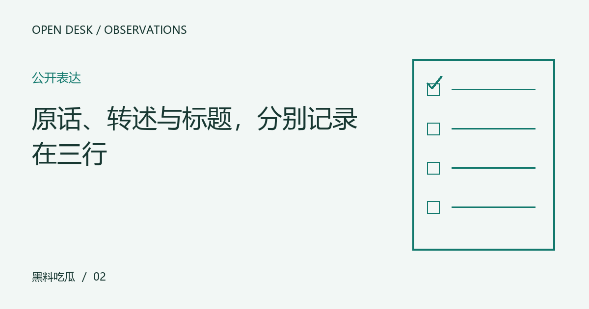

原话、转述与标题，分别记录在三行
一段发言经过摘要与标题后，可能增加原本没有的确定性。用简单分栏保存差异，能快速看见解释从哪里进入。

笔记一：确定这次核对的问题
原话提供表达本身，转述选择重点，标题负责吸引注意。它们可以互相帮助，也可能在压缩中改变条件。读者如果只保存标题，就很难判断某种强烈态度来自发言者还是编辑的概括，后续讨论也会越走越远。
笔记二：留下可以回查的材料
把公开原话、转述摘要与页面标题分别记录，对照关键动词与限定词。注意可能、计划和已经之间的差别，也看引述是否完整。文章标题若使用更强烈的词，检查正文是否支持，不从语气反推人物的真实动机。
笔记三：执行一组小检查
这份关于“原话、转述与标题，分别记录在三行”的整理，适合用作下一次阅读的检查起点。先明确对象，再核对材料，最后才形成解释。下面几个项目各自回答不同的问题，不必把所有资料压缩成一个好坏判断；缺少其中某项时，说明缺口，远比用想象补出完整结论更有帮助。
- 分别保存原话和摘要
- 检查限定词是否被删去
- 确认标题有没有增加新主张
笔记四：写清仍然不知道什么
转述不必逐字相同，但应保持意思与适用条件。对复杂表达，可以承认摘要无法覆盖全部细节，提供回看路径。核对差异是为了理解，不是只要措辞不同就宣布所有整理都不可信。
下次回看时从这里接着查
围绕“原话、转述与标题，分别记录在三行”形成笔记后，可以再做一次自我检查：每个判断是否对应了具体材料，材料是否仍然适用于眼前的问题，自己的偏好又在哪些地方影响了解释。值得保存的不是一句漂亮结论，而是得到结论的路径。后续出现新的作品、发言或说明时，沿同一路径补充与修订，读者也就能够看清变化来自哪里。这个过程不保证所有人达成一致，但能让分歧变得可以讨论。
编辑演示：本文用于展示专题阅读；虚构情境不构成真实人物或事件报道。
下一篇：把发布时间与事件时间分开，避免旧图变新事 →